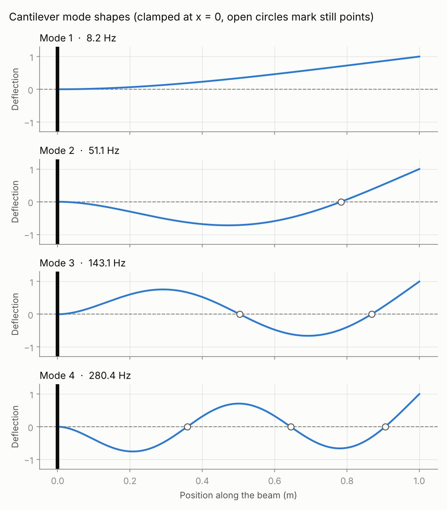
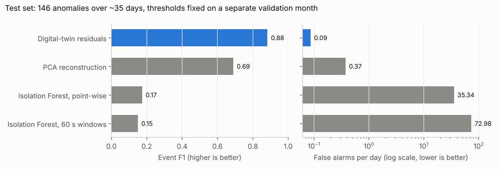

I build models that understand the machines they monitor.
Machine learning engineer and mechanical engineer in Lagos. I combine physics with ML for predictive maintenance, anomaly detection and structural health monitoring, and I report every result with its baseline and its limits.
Selected work
Each project has public code, a held-out test, a baseline to beat, and a written list of what it does not do yet.
-

BeamTwin: finding damage in a beam from how it vibrates
Finite element model written from scratch, a physics-hybrid neural surrogate, and a Bayesian detector that locates damage from vibration readings. Deployed with a live demo.
Python, NumPy, PyTorch, FastAPI, Docker, GitHub Actions
55×lower frequency error than a plain neural network -

Remaining-life prediction when 45 of 50 filters never failed
A physics-informed clogging model predicts remaining useful life from right-censored data, then turns its uncertainty into replace-or-wait maintenance decisions.
Python, SciPy, scikit-learn, XGBoost, survival analysis
58%lower error than gradient boosting -

Anomaly detection that names the root-cause sensor
A residual-based digital twin on a 5-million-point sensor benchmark, evaluated the way an operator experiences alarms: events caught, false alarms per day, delay.
Python, NumPy, scikit-learn, system identification
0.09false alarms per day, catching 80% of anomalies -

Separating temperature from structural change on a real bridge
15 months of measured data from the KW51 steel railway bridge in Leuven. A temperature model learned before a retrofit reveals what the retrofit actually changed.
Python, NumPy, pandas, SciPy, blocked cross-validation, bootstrap
98%of post-retrofit days flagged for mode 13, up from 0% -

Measuring crack width from photos, and a leak in a public benchmark
A U-Net finds cracks in concrete photos and turns them into length and width. The engineering question: under what photo conditions is the width reliable enough for inspection?
Python, PyTorch, segmentation-models-pytorch, OpenCV, scikit-image
79%of a benchmark's test photos leaked into training
About
I studied mechanical engineering at the University of Ilorin, and I came to machine learning through the machines: how they wear, vibrate and fail. I founded Berm Engineering and Consulting in 2026 to apply ML to structural inspection and predictive maintenance, and I lead its in-house research.
My work sits where physics meets data. I build models that encode what engineers already know, test them against honest baselines, and turn their predictions into decisions someone can act on. The same methods carry over to fraud detection, risk and forecasting in any industry.
Modelling
Physics-informed and surrogate models, finite element analysis, Bayesian inference, survival analysis, anomaly detection, time series, Kalman filtering.
ML and software
Python, PyTorch, TensorFlow, scikit-learn, XGBoost, SciPy, pandas, SQL, MATLAB, pytest, Git.
Deployment
FastAPI, Docker, GitHub Actions, Streamlit, Render.
Learning now
MLflow, cloud deployment on AWS and GCP, and LLM systems with retrieval-augmented generation.
Experience
- Jan 2026 to now
Founder and Principal Engineer, Berm Engineering and Consulting Ltd, Lagos
Founded and registered an engineering consultancy for ML in structural inspection, defect detection and predictive maintenance. Delivered eight ML projects for business and individual clients, and lead the in-house R&D shown above.
- Feb 2025 to Apr 2026
Machine Learning Engineer, Digital Fortress Institute, Lagos
Built a Streamlit app covering the full ML workflow for machine-failure data, applied supervised, unsupervised and reinforcement learning to predictive maintenance and process control, and taught ML tutorials to junior team members.
- Oct 2018 to Aug 2024
B.Eng. Mechanical Engineering, University of Ilorin
Second Class Honours (Upper Division). Final-year project: designed and built a 10-tonne hydraulic press.
- Apr 2022 to Nov 2022
Mechanical Engineering Intern, University of Ilorin Central Workshop
Maintained and repaired lathes, milling and drilling machines, and machined precision parts to GD&T specifications.
Papers and posts
- A prediction is not a decision
How I found my own predictive-maintenance model was answering the wrong question, and what rebuilding it taught me. LinkedIn post.
- Strong metrics, wrong behaviour
Target leakage and censored data in predictive maintenance. LinkedIn post.
- Numerical simulation of the compositions, processing, materials, and properties of automotive brake pad production
Co-author. International Journal on Interactive Design and Manufacturing, Springer, 2026.
- Characterization of oil from trunk fish (Mormyrus rume)
Co-author. Journal of Engineering Research and Applied Science, 15(1), 2026.
Contact
I'm open to machine learning engineer and data scientist roles, remote or on-site, in any industry.